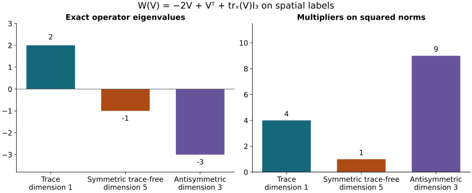

This analytic chapter belongs to Unit 9. The tension equation
measures the remaining discrepancy in the covariant wave equation. Its
forcing must be estimated with the other terms before a wave bound can
close. We first evaluate every tension coefficient using the lowest
electric input, then expand and bound the entire receiving operator.
Read space-time
tension, ST.12–ST.32, electric smoothing, ES.19
and ES.25–ES.29, and the original equation in tension and null
structure, NX.19–NX.22. The estimates below retain each ordered
derivative and both original second-derivative terms. Several useful
smaller constants follow by computing their full operators together.
Result. Every tension constant in ST.12, ST.16,
ST.18, ST.21, and ST.28–ST.32 has an explicit replacement depending on
the electric input only through
.
The entire spatial tension contribution to NX.20,
(TW.1)
then satisfies the all-order estimates TW.25 below with the original
weight
,
in both
and
.
TW.26–TW.28 expand orders zero, one, and two completely. The combined
ordinary second derivative has exact operator norm one relative to the
full second derivative tuple. Three further algebraic combinations give
lower-order constants
,
with every original term retained and the combination proved in
TW.17–TW.22.
1. Inputs and source use
The fields, physical interval
,
heat interval
,
original speed
,
spatial coordinates, and full ordered word/output Hilbert–Schmidt tuple
norms are exactly those in ST and ES. In particular
,
,
,
and
.
The matrix connection is anti-Hermitian, with the real Hilbert–Schmidt
inner product and
.
The heat extension is the current regular solution, so every
positive-slice manipulation below is legitimate and the weighted
zero-endpoint terms used by ST vanish.
The existing coefficient bounds are retained in full:
(TW.2)
Their complete formulas are ST Section 7, ST.26, and ES Section 1.
The base electric input is the unchanged ST.11 quantity
All its endpoint wave data, wave forcing, speed factors, and physical
time measure remain. The superscripts on
label the outer heat exponent. Thus
below means the square of the heat-exponent-two constant.
2.
Every electric forcing constant from the same lowest input
Use the finite
actually proved in ES.19, and set numerical coefficients
(TW.3)
ES.25 and ES.27 say exactly that
and
.
In both alternatives of the minimum in ES.29, the electric factors are
now the same scalar product. Therefore
(TW.4)
This is an algebraic evaluation of the proved ES.29 constants. No
electric field or heat norm has been changed. In particular
(TW.5)
The replacements for all three ST.12 constants are
,
,
and
.
For the first, its original unweighted measure is retained:
.
3.
The original zero-order tension energy and the full recurrence
NX.7 and ST.2 give the actual equation
(TW.6)
The curvature multiplication operator has norm at most
.
Keep the original accumulated coefficient
Spatial covariant integration by parts in the full physical
inner product gives exactly
.
Multiplying this identity by
,
with the derivative of that scalar multiplier retained, yields
(TW.7)
Regularize the norm before dividing, integrate, and decrease the
regularization to zero. Since
,
this gives
.
Integration of TW.7, keeping its nonnegative final norm term, then gives
. Thus the complete
ST.16 replacements are
(TW.8)
The last bound uses the exact identity
,
bracket constant two, TW.2, and
.
No physical-time supremum was substituted for the physical-time integral
in this calculation.
Keep the entire ordinary forcing of the tension heat equation:
(TW.9)
We now construct, in finite order,
(TW.10)
When
and
are available, define
(TW.11)
There are no future constants on the right of the first four lines.
To prove the forcing estimate in this recurrence, distribute the ordered
derivative positions in TW.9 among its factors. The first, second, and
fourth products give exactly
subsets; the nested bracket gives exactly
ordered three-part assignments. The full tuple constants are
respectively
,
as in ST.28. After extracting the indicated derivative weights, the
residual heat factors are
,
,
,
and
.
The first term uses
and
;
the next and fourth use
and the indicated
;
the third uses
.
TW.4 treats the last term. Consequently
.
The exact differentiated heat-energy calculation, summed over all
ordered words and outputs, is
(TW.12)
It follows by pairing
’s
equation with
,
integrating in the actual physical variables, and using Young’s
inequality with both coefficients
.
The full spatial Fourier identity
retains all
mixed derivatives. The lower heat boundary term vanishes by current
regularity and
.
TW.12 proves the last line of TW.11 and hence TW.10 at every finite
order.
After this step, the complete ST.32 replacement is
(TW.13)
This uses the exact scalar suprema
and
instead of their heat-exponent-two norms. In particular the explicit
ST.18 and ST.21 replacements are
(TW.14)
These are exactly the old formulas with the proved new electric
inputs and the corresponding hatted tension constants.
4.
Expand the entire receiving operator before estimating it
For the spatial output
,
the last term of NX.20 is
by NX.6–NX.7 and ST.2. Expanding TW.1 gives
(TW.15)
All three first-order products, both differentiated-potential
products, both nested products, the original ordered curvature
contraction, and the original signed forcing remain. No covariant
derivative was exchanged to obtain TW.15.
The
ordinary second derivative: exact Fourier identity
Let
.
With the original spatial Fourier conventions,
.
For
,
this is
,
where
.
The complementary projection is
.
Multiplication proves
,
complementary sum
,
and zero product. At
,
the original symbol is zero; no
contribution can be supported at this single point. Plancherel and
give the full identity in the unchanged physical measure:
(TW.16)
The constant one is optimal: take a nonzero smooth compactly
supported scalar
,
with one of its first two derivatives nonzero, a nonzero fixed
Lie-algebra matrix
,
and a nonzero smooth compactly supported function of physical time.
Multiply that time function by
.
Its divergence is exactly zero, and TW.16 is equality for every finite
.
The original two second-derivative terms have thus been compared
exactly, with the complementary contribution retained in the identity,
rather than discarded as a separate term. This proves optimality of the
linear operator bound; that test tuple is not asserted to be a
Yang–Mills tension solution.
Three first-order products
together
For a Lie-algebra-valued spatial matrix
,
define
,
the trace over spatial labels only, and
(TW.17)
For
,
this is precisely the entire second line of TW.15, with all its signs
and coefficients. Retain the exact orthogonal spatial decomposition
,
where
,
,
and
.
Spatial transposition does not transpose the matrix entries. Their inner
products vanish by symmetry, antisymmetry, and the zero spatial trace.
Thus
and
(TW.18)
The last inequality is the bracket bound followed by Cauchy–Schwarz
in
and then the full output sum in
.
It improves the valid separate-term coefficient
.
The decomposition proves an identity involving every part of the
original derivative matrix; it does not replace the original field or
its derivative norm.
Both
differentiated-potential products together
For
,
define
(TW.19)
This is exactly the third line of TW.15. Expansion of its full square
gives
,
where the last bound is Cauchy–Schwarz over the three diagonal entries.
Consequently
.
The valid separate-term coefficient would be
.
Both original terms are included in this stronger bound.
Both
nested products together, at every derivative order
Define the bilinear coefficient operator, retaining the bracket
order,
(TW.20)
The fourth line of TW.15 is exactly
.
For anti-Hermitian
,
cyclicity of the matrix trace proves
.
Write
,
define
,
and
.
Then
,
so exactly
(TW.21)
Both terms are positive semidefinite self-adjoint operators, each
bounded above by
:
for the first use
;
for the second use
.
Their difference therefore lies between
and
,
proving
.
Here is the needed bilinear bound, including its proof. For a fixed
output tuple
,
the real function
is a quadratic form on the finite-dimensional real Hilbert space of
spatial connection tuples. Its representing self-adjoint matrix has all
eigenvalues in
,
by the preceding diagonal bound. Its polarized bilinear form is exactly
.
Cauchy–Schwarz in an orthonormal eigenbasis therefore gives
. The operator
is self-adjoint: this follows either by polarization of TW.21 or by
expanding the two adjoints in TW.20. Its operator norm is its supremum
absolute quadratic form over unit
.
We have proved
(TW.22)
Every ordinary derivative of the original anti-Hermitian connection
remains anti-Hermitian, so this bound applies to each coefficient tuple
used next.
For an ordered derivative word, the full Leibniz sum for
ranges over every ordered partition
.
Exchanging
and
is a bijection of this same sum. Its average with that identical sum is
therefore exactly the sum with
in each summand. This identity retains every original term and
multiplicity, including empty and equal-sized subsets. TW.22 then gives
coefficient four at every derivative order. Estimating the two original
nested terms independently would give eight.
5. Every
ordinary derivative of the complete contribution
For a word
of length
,
let its subsets denote positions, each with the original relative order.
TW.15 has the exact derivative expansion
(TW.23)
The third line may equivalently use
by the proved partition bijection. For any fixed subset assignment, the
map from a full word to its subwords is a bijection onto the Cartesian
product of word sets. The full squared tuple norm of a tensor product is
the product of the full squared tuple norms. Together with TW.16, TW.18,
TW.19, TW.22, the bracket constant two, and physical Hölder, this
proves
(TW.24)
Every norm here is in the original physical variables with the full
stated tuple. In particular the final curvature coefficient four is the
original coefficient two times the bracket constant two, with all nine
ordered spatial curvature pairs retained.
Define the explicit constants
(TW.25)
For the first term, the squared heat integral is exactly
,
which is bounded by
;
its supremum is bounded by
.
In the first-order products the residual factor after extracting
,
or
,
is exactly
.
The differentiated-potential and curvature terms also leave
,
now using
and its exact heat-exponent-two norm
.
The nested terms leave
,
whose heat-exponent-two norm and supremum are both
.
These facts and TW.4 prove every line of TW.25. The physical norm is
taken before the heat norm throughout.
6.
Orders zero, one, and two, without unevaluated combinatorial sums
At order zero, TW.25 is
(TW.26)
At order one, every differentiated placement is
(TW.27)
At order two the complete expansion is
(TW.28)
For the quadratic derivative distributions in TW.28, the coefficient
four of
is
from the two ordered potential roles. The coefficient two of
is
from those roles, whereas the coefficient two of
is the two assignments of the two distinct derivative positions. Thus
coincident spatial index values do not remove any term.
All constants in these three orders are a finite explicit
calculation. In particular the needed final derivative constants are
obtained in this order:
(TW.29)
TW.14 supplies
.
For full explicitness the other three required ordinary heat-forcing
constants are
(TW.30)
Equations TW.3–TW.5, TW.8, TW.14, and TW.29–TW.30 evaluate every
scalar appearing in TW.26–TW.28 without a higher wave input or an
unconstructed future derivative constant. In particular
needs at most the electric smoothing coefficient
,
potential coefficients through
,
and spatial-curvature coefficients through
.
All these are fixed-time coefficient constructions already proved.
7. Zero
cases, endpoints, findings, and the next receiver
When
,
the original positive energy norm and H9.40 imply
.
The actual electric and tension equations with their zero data give
.
The upper constants above remain finite and valid even if a retained
potential representative is nonzero. No construction divides by
,
,
or
.
If both electric input constants are zero, TW.4, TW.8, and TW.11 give
every hatted tension constant zero. All displayed inequalities include
the actual endpoint
.
Their heat-exponent-two integrals are on
,
with no unweighted derivative integrability at zero assumed.
The finite wave
argument uses TW.25 with the complete other spatial and temporal
contributions. The tension bound proved here is one input to that full
argument.
8. Worked
example: the full spatial matrix operator
TW.17 acts on the spatial labels of a matrix-valued tensor. Its three
orthogonal parts have multipliers
:
trace, symmetric trace-free, and antisymmetric, respectively. For a
fixed nonzero Lie-algebra matrix
,
exact examples of these parts are
Direct substitution into
gives
.
All entries of the original tensor are retained. Its squared norm
contributions are therefore multiplied by
.

The trace, symmetric trace-free and
antisymmetric spatial tensor components have exact multipliers 2, minus
1 and minus 3 under the full first-order coefficient
operator.
Figure: TW.17–TW.18. These are the spectrum and real dimensions
of the spatial-label operator, per matrix coordinate. The matrix entries
themselves are not transposed. Reproducible source:figure builder.
9. Exercises with full
solutions
Exercise
1. Preserve the zero-order electric coefficient
Evaluate
from TW.3.
Solution. Since
,
the only summand gives
.
The second single-term sum gives
.
Thus its two contributions are
and
,
retaining the original potential term and physical speed.
Exercise 2. The
weighted energy multiplier
Differentiate
and recover TW.7.
Solution. Its derivative is
.
The curvature term in the original energy identity is bounded by
,
and
.
These cancel in the upper bound. The covariant derivative energy remains
nonnegative, and the forcing is bounded by
,
exactly as in TW.7.
Exercise 3. The first
recurrence step
Which already known constants suffice to obtain
and
?
Solution. TW.8 gives
.
TW.14 then evaluates
from these, the original coefficient bounds and
.
TW.11 at
therefore gives
.
No
appears in that forcing input, so the step is not circular.
Exercise 4. The
complementary Fourier energy
For a real nonzero frequency
,
verify TW.16 for an arbitrary complex amplitude
.
Solution. Write
,
whose parts are orthogonal. The two symbols are
and
.
Their squared norms add to
.
Multiplication by
,
integration with the original Plancherel measure and then physical time
gives the full identity TW.16. The minus sign in the longitudinal symbol
does not affect its square but remains part of the operator.
Exercise 5. The trace
contribution
For
,
calculate its full squared norm.
Solution. Expanding all three diagonal squares gives
.
Cauchy–Schwarz gives
,
so
.
The matrix bracket adds its factor two, giving the complete coefficient
four in TW.19.
Exercise
6. Why averaging preserves all nested terms
Explain why every differentiated nested contribution may use
in TW.23.
Solution. The sum runs over every ordered partition
of derivative positions. Swapping its first two parts is a bijection of
the same index set, including empty parts. The sum therefore equals its
version with the two coefficient slots interchanged. Averaging those two
equal sums gives exactly
term by term. No coefficient or derivative placement is removed. TW.22
then supplies its factor four.
Exercise 7.
The cubic coefficient four at order two
Account for the coefficient of
in the cubic part of TW.28 before its outer factor
.
Solution. The orders
and
each have multinomial multiplicity
.
They correspond to the two labelled potential slots. Their scalar norm
products agree, so the total coefficient is
.
The equality of scalar products does not exchange the original matrix
brackets.
Exercise 8. Zero electric
input
Prove that both zero electric inputs force every hatted tension
coefficient to vanish in the displayed recurrence.
Solution. If
,
TW.4 gives every
,
and TW.8 gives
.
If all constants up to the current recurrence step vanish, each product
in TW.11 has a zero tension factor and its final electric product is
zero. Thus
and
.
Induction proves the claim for every finite order, without division by a
zero input.